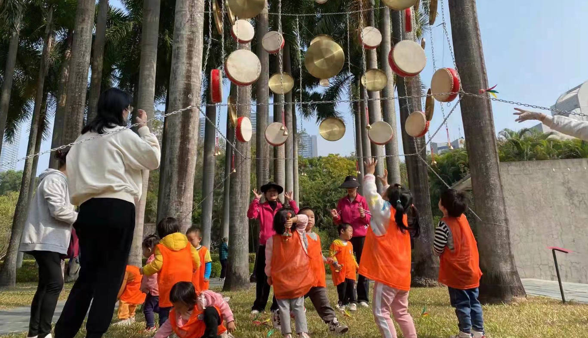
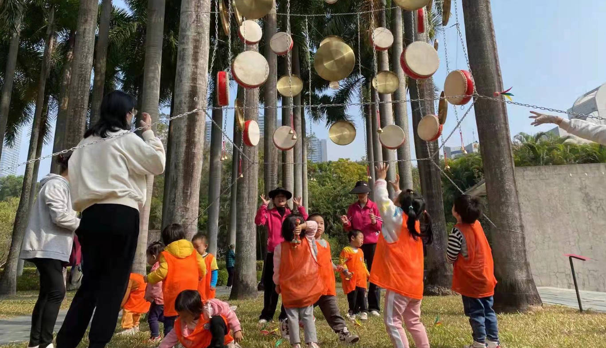

空间气质指南
Space-Guide
作品 / Projects
作品1-1

 

这是作品1-1的简要说明，描述其在地性、材料或空间创意。
作品2-1


这是作品2-1的简要说明，强调与场地之间的对话关系。
这是作品2-1的简要说明，强调与场地之间的对话关系。
作品3-1


这是作品3-1的简要说明，聚焦社区营造或材料逻辑。
作品4-1
这是作品4-1的简要说明，强调公共性与时空感受。
作品5-1
这是作品5-1的简要说明，结合日常生活与空间再定义。

这是作品1-1的简要说明，描述其在地性、材料或空间创意。
这是作品2-1的简要说明，强调与场地之间的对话关系。
这是作品2-1的简要说明，强调与场地之间的对话关系。
这是作品3-1的简要说明，聚焦社区营造或材料逻辑。
这是作品4-1的简要说明，强调公共性与时空感受。
这是作品5-1的简要说明，结合日常生活与空间再定义。

展示我们与社区合作策划的互动展览项目。

【体育都市主义】是2020年岳阳发起的研究计划，聚焦都市公共空间中发生的体育运动与游戏，以身体与城市公共环境关系的视角，探索公共空间的创意化设计与公共关系的优化。

【意外重庆】是2014年徐腾、曾毅、岳阳发起的空间观察研究小组，持续对以重庆为主的城乡空间进行观察和记录，探寻人与其生活环境的独特形态与有趣关系。

【城市四格】栏目以四格图像形式观察城乡环境，记录公共空间中各种有趣的现象和行为。该栏目为共创栏目，来源有学生、设计师、公共空间爱好者。

我们欢迎与不同机构共同开展项目、研究与展览。

空间气质指南致力于挖掘城乡空间气质，进行就地设计与公共艺术创作、研究。

邮箱 / Email: 810040332@qq.com
地址 / Address: 银河系访问学者驻重庆办公室